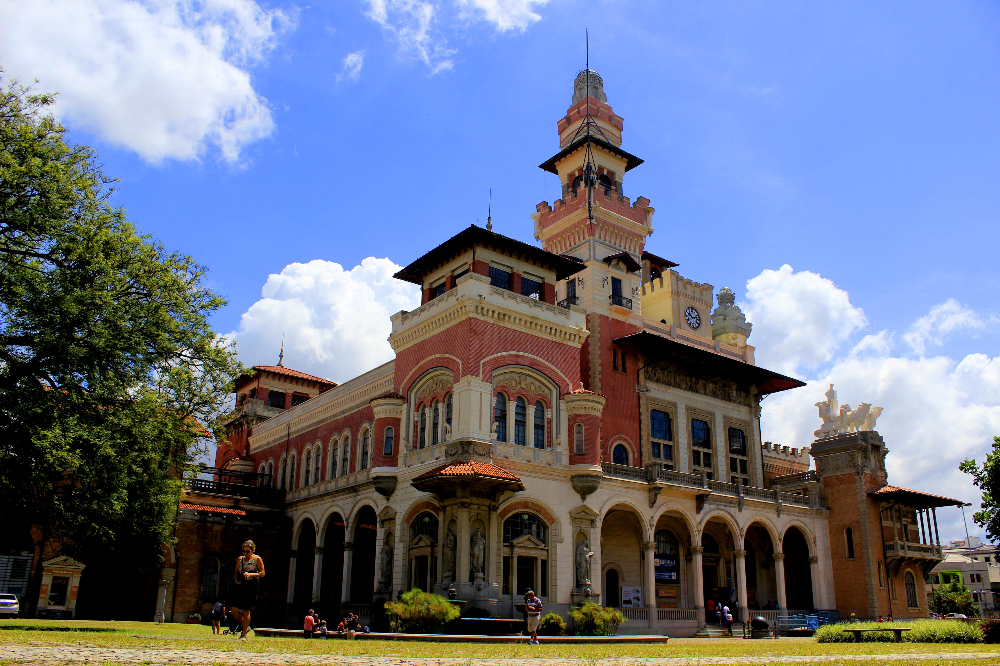

Mais pontos turísticos de São Paulo
Descubra qual será seu próximo passeio

Galeria do rock
Boa localizaçãoPróximo às estações do metrô, e tranporte público.

Viaduto do chá
Livre aos domingosVisite a avenida mais conhecida dos brasileiros, passeie e conheça o MASP.

Museu catavento
Mais movimentadoO bairro mais cultural e diversificado de São Paulo. Conheça uma nova culinária.